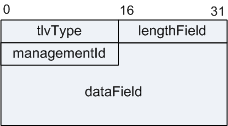

| 字段 | 长度 | 含义 |
|---|---|---|
| TranSpec | 4 bits | 传送相关。
|
| MsgType | 4 bits | 消息类型值。 |
| Reserved | 4 bits | 保留字段。 |
| VerPTP | 4 bits | 表示1588协议的版本。 |
| MsgLength | 2 bytes | PTP消息的长度，即PTP消息的全部字节数目。计入字节始于报头的第一个字节，同时包含并收尾于任何尾标的最后一个字节，或是无尾标成员时收尾于消息的最后一个字节。 |
| DomainNumber | 1 byte | 域编号，表示发送该消息时钟所属的域。 |
| Reserved | 1 byte | 保留字段。 |
| FlagField | 2 bytes | 标志域。 |
| CorrectionField | 64 bits | 修正域，各报文都有，主要用在Sync报文中，用于补偿网络中的传输时延，E2E的频率同步。 |
| Reserved | 32 bits | 保留字段。 |
| SourcePortIdentity | 源端口标识符，发送该消息时钟的ID和端口号。 | |
| SequenceID | 2 bytes | 序列号ID，表示消息的序列号，以及关联消息的对应关系。 |
| ControlField | 1 byte | 控制域，由消息类型决定。 |
| LogMsgInterval | 1 byte | 录入消息周期，PTP消息的发送时间间隔。 |
| targetPortIdentity | 10 bytes | 管理消息产生动作节点或端口的portIdentity。通过targetPortIdentity标识的端口不一定是接收到该管理消息的端口。在时钟发送管理消息到管理者的情况下，targetPortIdentity字段应该被设置为它所响应的管理消息的sourcePortIdentity。 |
| startingBoundaryHops | 1 byte | 用于那些不是用来响应从另外的管理消息请求而发起的消息，startingBoundaryHops的值应该是从请求消息中的startingBoundaryHops和boundaryHops字段计算出来的，值为startingBoundaryHops减去boundaryHops。 当接收到管理消息时，这个差异的绝对值指示该消息经过边界时钟重新发送的次数。 |
| boundaryHops | 1 byte | 指示边界时钟接收消息，该管理剩余的连续重新转发次数。当第一次由初始的时钟发送时，boundaryHops的值应该和startingBoundaryHops字段中的值相同。 |
| reserved | 1 byte | 预留。 |
| actionField | 1 byte | 指示对接收到消息将采取的动作。 |
| reserved | 1 byte | 预留。 |
| managementTLV | M bytes | 管理消息要求以0或一个TLV结尾。 管理TLV的格式： 
|
| 标准 | 描述 |
|---|---|
| IEEE 1588 V2 | Precision Clock Synchronization Protocol for Networked Measurement and Control Systems |
| IEEE P1588™ D2.2 | Draft Standard for a Precision Clock Synchronization Protocol for Networked Measurement and Control Systems |